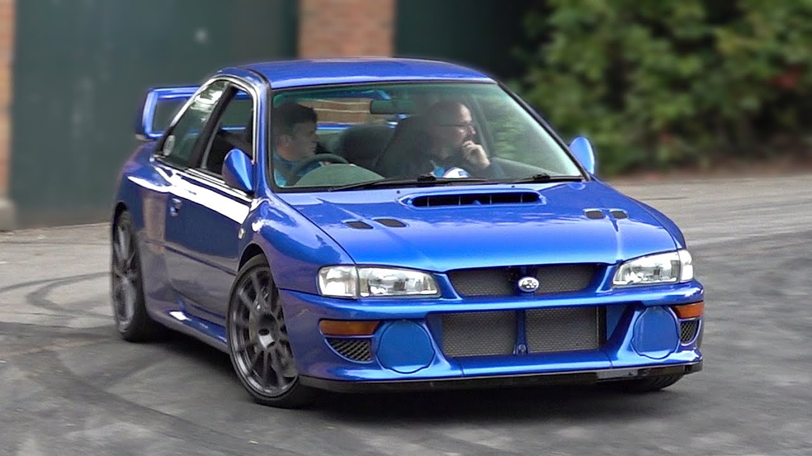

-
Styl i Design:
Impreza WRX STI z lat 90. charakteryzuje się agresywnym i charakterystycznym wyglądem, który przyciąga uwagę na drodze. Jego muskularne nadkola, charakterystyczny spojler tylny i duży wlot powietrza na masce dodają mu sportowego charakteru. Wersja WRX STI wyróżniała się również specjalnymi elementami stylizacji, takimi jak emblematy STI, czerwone akcenty i większe alufelgi, które podkreślały jej wysoką wydajność.
 -
Silnik:
Impreza WRX STI była napędzana przez potężny silnik bokser o pojemności 2.0 lub 2.5 litra, z turbodoładowaniem i intercoolerem. Silniki te oferowały imponującą moc i moment obrotowy, co zapewniało dynamiczną jazdę i świetne osiągi. Jedną z charakterystycznych cech silnika bokser było jego niskie położenie i równomierna dystrybucja masy, co przyczyniało się do doskonałych właściwości prowadzenia.
-
Wydajność i prowadzenie:
Impreza WRX STI z lat 90. oferowała wyjątkową wydajność i doskonałe właściwości prowadzenia, zarówno na torze, jak i na drodze publicznej. Jej napęd na wszystkie koła (Symmetrical All-Wheel Drive) zapewniał doskonałą przyczepność i stabilność, nawet podczas dynamicznej jazdy. Samochód był również wyposażony w zaawansowane układy kontroli trakcji i stabilizacji, które pomagały kierowcy utrzymać kontrolę nad pojazdem nawet w trudnych warunkach drogowych.
-
Kultura i dziedzictwo:
Subaru Impreza WRX STI z lat 90. jest uznawana za jednego z najbardziej kultowych i cenionych samochodów sportowych swojej epoki. Jej sukcesy w rajdach i wyścigach oraz popularność w kulturze samochodowej sprawiły, że stała się ikoną motoryzacyjną. Dziedzictwo Imprezy WRX STI jest kontynuowane przez kolejne generacje tego modelu, które nadal zachwycają miłośników motoryzacji na całym świecie.
Subaru Impreza WRX STI z lat 90. to nie tylko samochód, ale prawdziwa legenda, która nadal zachwyca swoją wydajnością, stylem i dziedzictwem.